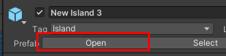
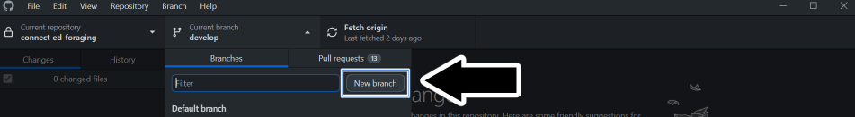
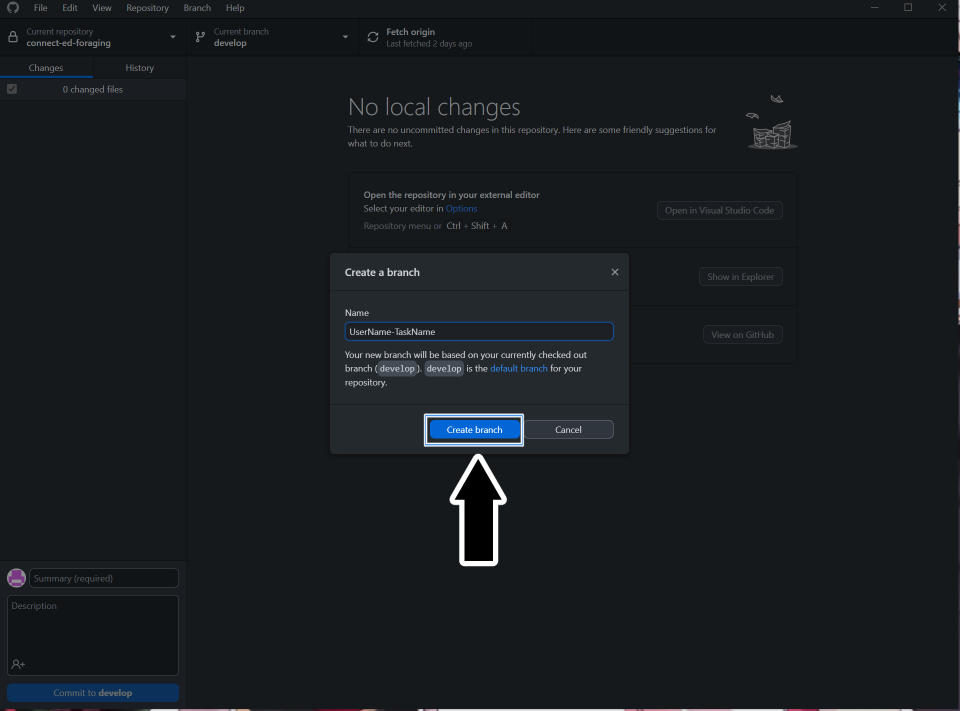
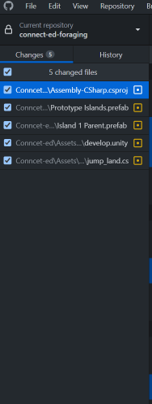
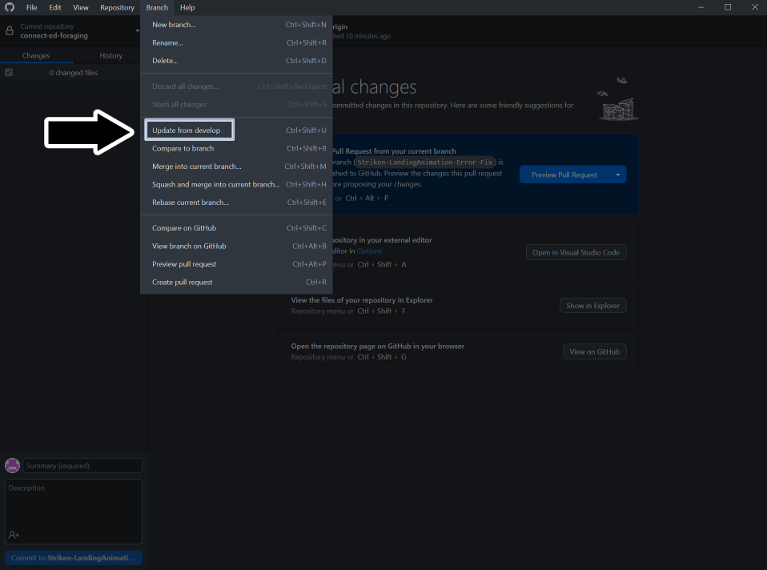

Programming Team Guide

Welcome to the programming team
This document contains instructions and information to assist you in an easy transition as a programmer within P1-OM. We are focused on your growth as a programmer and member of P1-OM and are not concerned of your skill level. If you have the interest and the determination to be a programmer or you just want to be a hobbyist, both are acceptable. We ask only, if you say you are going to do a task, follow through with your task.
Excluding the Join Task, if you have any questions about anything regarding this documentation, P1-OM, or programming questions for our projects or any personal projects do not hesitate to ask. There are no stupid questions and if someone doesn't have an answer, they will at least point you in the right direction to find your answer.
What is the game
Sky Jellies is a game that aims to bridge a sandbox craft game, like Minecraft, and combine it with a wholesome pet-type game. The player befriends different kinds of Jelly creatures that help them progress in building resources to explore and build in the game world.
Why two projects and their differences
For us developers in P1, there are two types of “builds” we currently develop. These are the Compassion Prototype and the Full Game. Understanding the differences at first might be tricky, but here is the essential breakdown.
-
Compassion Prototype
- This is a build that we can use to showcase to everyone the type of game we are developing. It allows most of us to “prototype” a concept and see the reactions from others before implementing it into the main game. Most of the development is not clean and advanced, which is fine for the prototype.
-
Full Game
- This will be the eventual game for Sky Jellies. Perhaps it does not look like much, but it will eventually be deployed with advanced and final variations from the Prototype.
For those familiar with GitHub, these builds have their own respective repository. The Prototype is listed as Connect-ed-foraging, and the Full Game is listed as SkyJellies on GitHub.
It is important to note that the Prototype and the Full Game have their own rules when developing for them. Please follow those guides, which are listed in the respective sections.
HOW TO
Understand our systems
Follow our guides, we have instructions on how each of the game's core system works from a technical perspective. HERE this one shows you how to set up Unity, which versions are used for the Prototype and the Full Game, and HERE for learning about GitHub, our choice for source control. If anything is not clear in the documentation or guides don't be afraid to ask questions or suggest changes.
Structure your code
Style guides are used so programming teams can have common standards and naming conventions for their code. This helps code readability as in large projects you will be working with other peoples' code. While it may be hard to start using different rules to what you're used to in the long run it helps the project be more accesible to newer members. See our Style Guide HERE
Document your code
XML tags
-
For classes and methods/functions inside that class, include a
<summary>XML tag for their explanation. -
If the method/function has any parameters, use the
<param>XML tag following the<summary>XML tag for the parameter explanation/s. -
REMEMBER that documented code uses three backslashes "///" as opposed to a comment that uses two, "//".
-
We will mostly focus on
<summary>and<param>XML tags but, HERE is documentation for all the available XML tags and descriptions of how to use them.
SerializeField
The SerializeField attribute allows the class member to be exposed in the Unity Inspector even if it is private. Having it exposed for the Unity Inspector allows us to manually change or assign that variable through the inspector instead of code. We can pass in references to game objects in the scene this way.
- It is similar to having a public declaration, but having serializable code allows us to keep the private declarations and have Inspector exposure.
[SerializeField] private float MoveSpeed = 2.5f;

Tooltip
- Unity has an attribute called "Tooltip" that provides context for class members in the Unity inspector and in IDE's such as Visual Studio.
- Including tooltips with every class member increases productivity by not having to switch back and forth between Unity and your IDE to know what a class member is being used for. If the class member has a SerializeField attribute, just hover the mouse cursor on the class member in the inspector and the tooltip will be displayed. The same goes for the class member, any where the member is being called the tooltip will be displayed if the mouse cursor is hovering over it.
using UnityEngine;
/// <summary>
/// Class explanation here
/// </summary>
public class AGoodClassName
{
// Do this
[SerializeField, Tooltip("Health value between 0 and 100.")]
private int _health;
[Tooltip("Stamina value between 0 and 100.")]
public float stamina;
// Don't do this
[SerializeField, Tooltip("Health value between 0 and 100.")] private int _health;
[Tooltip("Stamina value between 0 and 100.")] public float stamina;
/// <summary>
/// Method/function explanation here
/// </summary>
/// <param name="param1">Param 1 explanation.</param>
/// <param name="param2">Param 2 explanation.</param>
public void AGoodMethodName(int param1, float param2)
{
//Do Stuff
}
}
The explanation should follow these rules:
- Use it to explain WHAT the code does, what purpose the code fulfills.
- Make the explanation short, no more than 5 lines.
- Saying that the Jelly_sleep.cs "Handles the Jelly's sleep" is not an explanation.
- A good explanation should contain where this script should be attached or when it's functions are called.
Bug
We document and track all our bugs on our Action Trello. If that does not sound familiar please ask about being added to it in programming chat in the Discord. Learn more about bugs and our procedures HERE
Unity
To create our game we use Unity (you already know that). Specifically:
Compassion Prototype
The Compassion Prototype is where we prototype features that may or may not be in the final product. After the Join Task, your first tasks will most likely be from the prototype unless you will be joining a Crew. The style guide is ot enforced here but is highly encouraged to follow it anyway. To learn more about the Compassion Prototype check out this section: HERE. To learn more about Crews check this out: link added soon
- The Unity version for the prototype is 2020.3.37f1 (You didn't know that).
- If you don't have it you can download it HERE. Don't use other versions, yes I know 2020.3.34f1 is 99% the same, it cause problems.
Full Game/Production
The full production game is where all the teams best work will end up and be finalized. The style guide is strictly enforced for optimal readibility and cohesiveness. With the addition of Crews, they will be focusing on smaller manageable parts for the full game.
- The Unity version for the full game is 2021.3.20f1 (You also didn't know that).
- If you don't have it you can download it HERE.
The video below has detailed instructions if you need them.

Prefabs and the develop scene 
The develop scene is the main scene we use and is compromised of multiple prefabricated objects (prefabs for short). They have a blue color in the hierarchy.

When making changes to a prefab you need to find the object in the project files or open it from the inspector and do the changes there, not in the develop scene directly . If the prefab contains other prefabs inside it, keep opening them.

Prefab Documentation: Unity's Documentation
GitHub - Overview and Installation
GitHub is a distributed source control tool that uses the Git language. For a presentation on source control and GitHub, click the banner to watch Traba's presentation or click HERE to download the presentation for leisurely viewing.
Traba's Git Seminar by P1-OM

Why we use GitHub
As mentioned in the introduction, we use GitHub repositories for handling source control. Source control is a means for a mass collective to contribute to a project without ruining the main version of the project. We contribute to the main development without editing the main development. P1 already has a GitHub setup, so that is why we use GitHub over something like Perforce.
How we use GitHub
There are a few various methods of interacting with GitHub repositories. The command line is the least attractive way of doing it but it is the foundation of all the other ways. In IDE's such as Visual Studio, if you open a Github project there are tools built-in to help you. Also, Github has created their own application called GitHub Desktop.
For ease of use and quick startup for everyone we recommend using GitHub Desktop. This guide will be referencing Github Desktop in detail. The video below shows how easy it is to get started with GitHub and GitHub Desktop for Unity projects. (It includes the whole process from setting up your own repository, creating a gitignore, and commiting.)
As a new member your main concern will be installing GitHub Desktop (or using your preferred method) and cloning our project

If you are interested in using command line or just learning as well, Click HERE
If you need to gain access, your point of contact will be Samuel Martin. You can send them a direct message in Discord asking them to gain access to either of the repositories you need access to (Most likely the prototype at first unless joining a Crew). Ensure to include the email you use for GitHub, as they need that to add you.
Creating a new branch
You cloned the project and you're ready to start working on your task...
STOOOOOOOOOOOOOOOOOOP
Important , Make sure you did not fork the project instead of cloning
Forking the project is similar to cloning and you are able to do all the of the next steps without knowing. When you fork the project you create a copy of the project that was forked. That in itself isn't bad, but you will not receive any of the changes other programmers merge into the original project. If you commit any changes to your forked project the original project will never see them.
Important , Make sure you are working on a different branch and not the main branch.
This is a red flag if you find yourself on the branch shown in the image below. Do not make any direct changes to this branch.

What you should do instead is create a new branch from that branch.


With your new branch ready, you can publish it for everyone to view. Or you can decide not to publish it if you want to test several things. But for handling your tasks, you should publish the branch since it will need to be reviewed later. Note: You should follow a naming convention for your branch. Example: YourDiscordName-Task
Making Changes
When you change the project, it will appear like the image below in GitHub Desktop.

These changes are not saved in the GitHub branch yet. To do that, you need to commit these changes, and it is required to have a commit summary title. Although you do not need a description, you should add one for others to know what changes you have made in this commit. Once you have hit the commit button, you must push those changes before they go live.
We have changed a Unity Scene, a C# script, and others in the image above. Now you can “commit” these changes, but that can lead to problems such as conflicts. Let us say, for example, your task has you making a change or functionality to the C# script that is listed. Every other change does not impact that script change. You can safely delete those changes, which is HIGHLY recommended. This way, you only commit changes that are part of your task.
To delete a change, click on one of the changes (that you do not need) in GitHub Desktop and select discard changes.

Making Pull Requests (PR)
A Pull Request, or PR, is a request to pull the changes you made on your branch with the main develop branch. Putting it simply, it is a merge request.
When you’ve completed a task, you might think, “Now what?” For programmers in P1-OM, we handle task reviewing a bit differently. Ultimately, we require a Pull Request, shortened to PR, to be made for review.
Creating a Pull Request (PR)
Once you complete your task push your changes, publish your branch, and create a PR. Someone will review and merge it or request changes.
To create the PR, you can click on the create or preview Pull Request button in GitHub Desktop.

It will let you know if the merge can safely happen before creating the Pull Request. Otherwise, you may have to clear out a conflict (more on that below).
After clicking on the option to create a PR in GitHub Desktop, it will take you to the GitHub website for you to officially create the PR. You will need to fill out the description and a name for the PR. The form will ask for a link to the Pull Request Card.
The video below has all the steps:

Creating the Pull Request Card
Once you have reached the Pull Request step, you are ready to make the card for it. P1-OM uses Trello to handle all task management. Before making the PR, you should have had some time to look through the Action Trello Board and get acquainted with it. Regardless, when creating a PR, you create a new task for the programming team to handle. A task that requires someone else to review than yourself.
To create the PR Card, follow this link to the PR Card template: template
You can follow the steps on that card, but the general steps are as follows.
- Copy from the template (rename the card to "PR: your task name")
- Move the card to the "To Do" column under the "PROGRAMMING (Pull Requests)" section.
- Fill out the information: it needs the link to the task you worked on and the Pull Request.
- Use the share button to copy the card link to the form in GitHub, so it has a link to the card for you to officially create the PR.
- Copy and paste the PR URL from GitHub to the PR card.
- Do NOT join this card. The card is a created task that requires someone else to handle.
You officially made a Pull Request and a PR card on Trello for your task. Good work and Congratulations!
Handling Conflicts
You might end up in a situation where the changes you made conflict with a different set of changes. Ideally, this will not occur if we push changes only for our tasks. But you may run into this issue.
After creating the Pull Request, you can check to see if there are conflicts. And if there are, you will need to go and resolve the conflicts. Visual Studio Code is an excellent way to resolve conflicts.

GitHub Extras
Here are a few extra details that are not necessary to the project but could be good to know.
At any time, you can update the main project. Say you are working on a task and found some neat changes and wanted to see how that could apply to your task. You can do this by following the image below.

Important , updating from the main branch can and will overwrite changes you made if any modifications were made to that file in the main branch.
You can also view the history of commits to the repository in the history section. This can be useful for testing previous versions. You can create a new branch from any of the changes found in history.
Using Command Line
download git: HERE
git documentation: HERE
-Documentation soon-
Pull Requests (PR)
A request to Merge changes from one branch to another, usually the master/main branch.
How to do them
- Step 1: Open the PR on GitHub
- Step 2: Check the files changes
- Step 3: Open the branch in GitHub Desktop
- Step 4: Playtest the changes in Unity
- Step 5: Approve and merge
Open the PR on GitHub
Go to our repo on GitHub and click the PR tab.
Find the PR that you want to review.
Read comments, see who made it, remember to see what is the name of the branch (image 1a).
If you want to be profesional add yourself as a reviewer (image 1b).


Check the files changes
If you want to do this right, you need to go and check what files have been changed. If for small changes the number of files altered is large, that's a red flag. If for big changes the number is small, that is also a red flag. If you are a programmer you have a detailed list of all the code lines that changed.
Open the branch in GitHub Desktop
Hope you checked the branch name because now we need it.
Open GitHub Desktopand open the branch list (image 3a).
Fine the branch and open it, wait for it to load.

Playtest the changes in Unity
Now open or refresh the Unity project. Press play and test out whatever you need. If some thing doesn't work leave a comment on GitHub about it. If everything works move to the next step.
Approve and merge
If you are a designer just leave a comment that all is good. If you are a programmer follow the instructions of the respective project review.
Style Guide
Given that P1 is a large group, we will have a wide range of programmers on the team. Everyone will have different skill levels and different conventions for their programming. Hence, the style guide is one of the most important aspects to understand. This way, everyone can be on the same page when we work on tasks.
The style guide aims to inform you on general programming practices, naming conventions, comments, the order of members in classes, private declaration, some details for serialization in Unity, and information for using lambda delegates in C#.
General programming practice
- Make it good, not perfect. Perfect code does not exist.
- Focus on readibility, what is understood by you might not be to others especially months or years down the line.
- Don't worry about the length of a script and try to compact your code.
- Space out your lines if it provides better readibility.
- Try and keep each line less than 100 characters long.
- Keep every script relevant to itself.
- Don't add stuff about petting jellies in the Jelly_Bath script. Scripts that carry more than one functionality are confusing and prone to breaking.
- Don't hardcode values. Even if it shouldn't appear in the inspector declare it in a variable.
// Do this
private const _thisVariablesDoesThis = 5; //Unmodifiable
private void Function()
{
// Here we know what both variables are.
thisVariableDoesSomething += thisVariablesDoesThis;
}
// Don't do this
private void Function()
{
thisVariableDoesSomething += 5; // Why are we increasing it by 5?
}
- When you write “if” statements, instead of shortening the code without brackets “{},” it is better to include them, likewise for the other type of code where the brackets can be left out.
// Do this
if()
{
//Do stuff
}
while()
{
//Do stuff
}
//Don't do this
if()
//Do stuff
While() //Do stuff
//Also Don't do this
if(){
//Do Stuff
}
Naming Convensions
The importance of a naming convention makes the code easier to read.
Variables
- Use camelCase to name variables.
- Private variables should start with an underscore(_).
- If your variable is a boolean the name should be asking a question.
- Avoid special characters, it can affect how the editor reads the names.
- Your variable names can be 100 characters long and should describe what it does.
// Do this
private int _healthPoints;
private bool _hasItem;
//Don't do this:
private int PlayerChar;
private bool A;
private string PSText;
Functions
-
Function names will use PascalCase.
-
If a function triggers an event it's name should start with an OnEventName. Example:
private void OnDoorOpened()
{
//Do stuff
}
- If it returns a boolean the name should be asking a question. Example:
private bool IsPlayerDead()
{
return _isPlayerDead;
}
Privacy/Access Modifiers
Access modifiers are the public, protected, and private keywords used before a class and any members of that class like variables, methods, enums, etc. Leaving off the access modifier it is automatically considered private. We will be requiring to explicitly say that a class and its members are private.
Try to keep your variables as private as possible. That way we have better control of when and how scripts alter them. There is no harm in accessing a variable from another class. Be more concerned about changing the value from another class.
- Make sure if you need a class or class member protected, or public to write that access modifier. You will not find it due to it being private automatically.
- Here is a webpage explaining the importance of privacy and access modifiers in further detail
// Do this
private int _variable; // safest approach
[Serialized Field, Tooltip("Can be altered in the inspector")]
private int _variable;
//working with properties (getters and setters)
private int _variable;
public int Variable
{
get {return _variable;} // can be read from anywhere
private set {_variable=value;} // set from this class only
}
[field:SerializeField, Tooltip("same as above, but Unity creates a backupfield so you can set it in the inspector")]
public float MyFloat3 { get; private set; }
Comments
Don't use comments to explain what your code and variables do. Clean code explains itself. Most of the time comments should explain WHY the code does someting NOT HOW.
If it is necessary to write a piece of code that is not ordinary and it was the only way.
- Make a comment why you have done it this way.
If the task you are working on still has something left to do that goes farther than your task card intended.
- Add a TODO comment. Example:
//TODO: *what needs to be done* - Make a task card for the TODO comment and refer to it. Programming Task Card: HERE
- Make sure to specify the task you were working on and that task will need to be merged first.
Ordering of classes
The functions within classes should be arranged in a specific order. When we write classes , there is a specific order to keep in mind. Keeping a consistent order promotes readibility. The typical order is Declarations -> Events -> Private Functions -> Public Functions. Or better illustrated with the image below.
public class ClassName : MonoBehaviour
{
//Variable Declarations
private int _intVariable;
private float _floatVariable;
public string stringObject;
public bool isABool;
Enum Declarations
Unity Events
- OnValidate()
- OnEnable()
- Awake()
- Start()
- Update()
Private Functions
Public Functions
- Custom functions
- Get/Set Methods
}
Lambda Expressions and Delegates
Lambda expressions in C# are used like anonymous functions, with the difference that in Lambda expressions you don’t need to specify the type of the value that you input thus making it more flexible to use.
When you see “=>” in C#, you see a lambda expression. It is a way to shorthand a function call to return a value to a variable in the middle of your code.
For example:
public Float CurrentHealth => (energy * baseHealth)-damage;
Acts like a function with body:
{
return (energy * baseHealth)-damage;
}
But you can call it without brackets though, like :
if(CurrentHealth > 0)
The left of the “=>” operator is the input, and to the right is the expression. Lambdas are a bit advanced, which will be better understood through the video below. Action delegates are a unique way of writing function calls. With delegates, you can make a function like a variable that can be passed. Once again, it is advanced and better understood through the video below.

Bug Handling
We will encounter “bugs” in the game while developing the project. Bugs are generally things that should not be in the game. Such as game crashes, unwanted noises, unable to pet the jellies, and the list goes on for what could count as a bug.
If it is not an intended feature for the game, it is most likely a bug that requires fixing.
The rest of this page is dedicated to information for handling a task that deals with a bug you cannot find and what happens when you find a bug that isn’t listed.
The general bug-handling procedure is described in this Trello card: HERE
Unable to find the Bug
While you are working on your task involving a bug, you may run into the situation where no matter how many times you attempt to recreate the bug listed in the steps, you cannot find the bug.
The inability to find the bug means you cannot solve it (if it still exists). When this happens, apply the tag “1st attempt” to the task card on Trello, remove yourself from the task, and remove the deadline you had set. If a “1st attempt” already exists on said card, add the “2nd attempt” tag to that card. Lastly, a “3rd attempt – Archive” should be added.
The card can be archived with all three attempt labels on the card.
Finding a Bug
When you find a bug that is not discussed, check to see if a task for it exists in the Trello board.
There is a dedicated column for Bugs that are known or have only occurred once. Check in the programming section for the respective bug you have found.
If empty, check the To-Do, Task in Progress, and Ready for Review sections. Someone may be already handling said task. Lastly, you should check to make sure you have the most up-to-date version of the main develop branch and have that merged into whichever branch you are working on.
With all said and done, and you have found the bug without a task, you can create a card for it. Follow this card template for instructions on making it.
You will need to list the following:
- What the bug is
- Steps to finding that bug
- Any extras that might help (such as an image of the bug or a video)
Compassion Prototype - Not the Final Game
The Compassion Prototype, also referred to as the Prototype, is a build of the game used for marketing and show and tell. This build is made to showcase what we are building and test concepts.
It is mainly used for:
- Testing experimental features.
- Join tasks.
- Showcasing aspects of our game-idea.
The prototype was the Unity project that was created during the formation of this team it contains various problems:
- Contains a lot of old code from features that were scraped.
- Almost no documentation because originally people didn't give any importance to it.
- Lots of low quality code either due:
- Prefering quick tests of features.
- No code reviews ever.
This is not uncommon, many teams create "Quick and dirty" prototypes to test their ideas before creating the final product.
Accessing the Repository
The GitHub repository is listed as “Connect-ed-Foraging.” All programmers, new and old members alike, should be able to access the prototype. Follow the steps in the GitHub section of this document for who you reach out to gain access. Once cloned, the actual Prototype to be opened in Unity is in a folder called “Connect-ed.”
Rules for Pull Requests
Generally, the rules for a Pull Request in the Prototype are not very strict. But it is to allow new members to learn the rules to follow the correct procedure.
- If it works and does not cause any significant problems, merge.
If you are unsure about something, always feel free to ask questions.
Systems to Review
The following sections under the Compassion Prototype go over the developed systems. They will inform you how to work with the systems, such as the interaction system. When you take a task that involves one of these systems, it may not be a bad idea to review them here first before getting started on said task.
The interaction System
For the player to be able to interact with any object (slimes, benches, bushes) they need to have an Interactable component attached.
How it works
The PlayerInteractionFinder script uses a Raycast from the player Transfrom to detect any Gameobjects with Interactable components. When it finds one it triggers the StartLookingAt() UnityEvent on the Interactable Script which activates the InteractionsViaInputActions script, this script handles the UI prompt, the interaction triggering and the button prompts.
The Interaction
The Interactable.cs, PlayerInteractionFinder.cs and InteractionsViaInputActions.cs all use the Interaction Class. Let's break down what that Class contains.

- The name of the interaction. This also appears in the in-game UI.
- What item the player will receive upon completing the interaction (Use only in specific cases).
- The item that the player needs to hold and give for the interaction to happen (Item is consumed upon interaction).
- There can be multiple payment options.
- Leave empty to have the interaction appear always.
- Two events that can invoke functions set in the inspector or by code.
- The first event can transfer the item that was used to trigger the interaction if the function accepts ItemStack arguments.
- Both events can be left null without any errors showing.
- The isBlocked checkbox will disable the specific interaction.
- The Interactable component can hold multiple interactions so this can be usefull.
Item structure
We use the base class ItemBase to create items as scriptable objects. From there we have various classes that inherit the ItemBase to create more specialized item categories like placeable or the jelly dew.

Items are added to the player inventory either directly (from the interaction system or crafting) or from picking pickable prefabs objects.
Items must contain: - a reference to an icon asset that will be displayed at the player's inventory. - a reference to a placeable prefab object if the item can be placed down - a reference to a dropable prefab object which the player can pick up
Crafting Recipes
Crafting recipes contain a reference to the ItemBase scriptable object they create, the materials and the amount needed.
Folder structure: Assets -> ScriptableObjects -> Crafting Recipes -> Folder named after the workbench that will contain the recipe
Making changes to Island hearts (IH)
In order to make changes to the island hearts prefab enter the "New island hearts" folder.
- To make a change to a specific IH find it's specific folder (Blue square).
- To make a change to all IH use the Base_template folder (Red square).
- To create a new IH COPY the duplicate folder (Green square) and rename the new folder following the naming conventions: IH type.
Warning
Never make changes to IH outside these folders. They are gonna get lost and you will just confuse people.
Dependencies List
A list of dependencies for each script in the project (WIP) Dependency is when script A calls other scripts. Reference is when other scripts call script A.
Table of scripts
CraftingRecipe
Click here
| Dependencies | References |
|---|---|
| ItemBase | UpgradeRecipe |
| RequiredMaterial | CraftingUI |
| PlayerInventory | CraftingRecipeUI |
| ItemStack | UIManager |
| ------------- | Crafting |
UpgradeRecipe
Click here
| Dependencies | References |
|---|---|
| CraftingRecipe | Crafting |
| Crafting | CraftingUI |
| PlayerInventory | CraftingRecipe |
| ItemStack | ----- |
| UIManager | ----- |
CraftingUI
Click here
| Dependencies | References |
|---|---|
| CraftingRecipe | UIManager |
| PlayerInventory | CraftingUI |
| CraftingRecipeUI | ----- |
| RequiredMaterial | ----- |
| RequiredMaterialUI | ----- |
| UIManager | ----- |
RequiredMaterialUI
Click here
| Dependencies | References |
|---|---|
| RequiredMaterial | CraftingUI |
CloudsUISettings
Click here
| Dependencies | References |
|---|---|
| CloudGeneration | ---------- |
CloudGeneration
Click here
| Dependencies | References |
|---|---|
| --- | CloudsUISettings |
GrabSlime
Click Here
| Dependencies | References |
|---|---|
| Slime | Interactable |
| Interactable | ----- |
| Interaction | ----- |
| AkSoundEngine | ----- |
| PlayerMovementController | ----- |
PlayerMovementControl
Click Here
| Dependencies | References |
|---|---|
| UIManager | FootstepsAnimationSound |
| TimeManager | DroppedItem |
| StarterAssetsInputs | InteractionsViaUI |
| PlayerGrabSlime | PlayerDataManager |
| TrainersManager | PlayerCamController |
| AkSoundEngine | FeedSlime |
| PlayerInputActions | GrabSlime |
| GameEvents | PetSlime |
| InputManager | DroneActionSequence |
| StarterAssetsInputs | DestroyObject |
| SerializationManager | PhotoModeUIController |
| RespawnPlayerCurrentIsland | PlayerTooltipPickup |
| PlayerDataManager | PlayerEnergyController |
Slime
Click Here
| Dependencies | References |
|---|---|
| IFeedable | SlimeManager |
| SlimeSaveData | UIManager |
| SlimeName | SlimeAgent |
| SlimeManager | PlayerGrabSlime |
| DialogManager | PlayerNameSlime |
| PetSlime | CraftingSlime |
| SlimeAgent | ColdWarmSystemSlime |
| AkSoundEngine | FeedSlime |
| DialogData | GrabSlime |
| SlimeLevelUpInfo | PetSlime |
| Player | SleepingSlime |
| PlayerBlockInteraction | SlimeUIInteract |
| Outline | RenameSlimeUI |
| ----- | UIController |
| ----- | SlimeTransportHandler |
| ----- | SlimeStatus |
PlayerGrabSlime
Click Here
| Dependencies | References |
|---|---|
| PlayerBlockInteraction | PlayerMovementController |
| Slime | ----- |
| AkSoundEngine | ----- |
PlayerBlockinteraction
Click Here
| Dependencies | References |
|---|---|
| ItemStack | PlayerTooltipPickup |
| Island1BuildBlocker | Bridge |
| BuildAreaManager | Table |
| AkSoundEngine | CreativeItem |
| Island1BuildBlocker | PlaceableItem |
| PlayerToolAnimation | ToolItem |
| PlayerInventory | PlayerGrabSlime |
| ToolController | ToolController |
| ----- | CraftingRecipe |
| ----- | UpgradeRecipe |
| ----- | Slime |
| ----- | DestroyObject |
| ----- | GetBlock |
SlimeAgent
Click Here
| Dependencies | References |
|---|---|
| ColdWarmSystemSlime | Slime |
| FeedSlime | SlimeUIInteract |
| Slime | ----- |
| SleepingSlime | ----- |
| ItemBase | ----- |
| PlayerInventory | ----- |
| Bed | ----- |
SleepingSlime
Click Here
| Dependencies | References |
|---|---|
| Interaction | SlimeAgent |
| Bed | Bed |
| DialogData | ----- |
| SlimeManager | ----- |
| Slime | ----- |
| Interactable | ----- |
TimeManager
Click Here
| Dependencies | References |
|---|---|
| GameEvents | StarFade |
| Time | SerializationManager |
| PlayerDataManager | WwiseManager |
| ----- | PlayerMovementController |
| ----- | LightingManager |
| ----- | LowerPlaneManager |
| ----- | MoonOrbit |
| ----- | SkyboxManager |
| ----- | PostMod |
| ----- | PhotoModeUIController |
| ----- | TimechangeInScene |
| ----- | TimeEvents |
SlimeStatus
Click here
| Dependencies | References |
|---|---|
| Slime | - |
| SleepingSlime | - |
| ColdWarmSlimeSystem | - |
SleepingSlime
Click Here
| Dependencies | References |
|---|---|
| Interaction | SlimeAgent |
| Bed | Bed |
| DialogData | SlimeStatus |
| SlimeManager | ----- |
| Slime | ----- |
| Interactable | ----- |
PlayerMovementController
Click Here
| Dependencies | References |
|---|---|
| CharacterController | FootstepsAnimationSound |
| PlayerInput | DroppedItem |
| Animator | InteractionsViaUI |
| StarterAssetsInputs | PlayerDataManager |
| PlayerGrabSlime | PlayerCamController |
| TrainersManager | FeedSlime |
| PlayerInputActions | GrabSlime |
| AkSoundEngine | PetSlime |
| GameEvents | DroneActionSequence |
| InputManager | DestroyObject |
| SerializationManager | null |
| RespawnPlayerCurrentIsland | null |
| PlayerDataManager | null |
| TimeManager | null |
| UIManager | null |
SlimeLevelUpInfo
Click Here
| Dependencies | References |
|---|---|
| null | FeedSlime |
| null | Slime |
IslandHeart
Click Here
| Dependencies | References |
|---|---|
| IslandHeartInfo | IslandHeartRangeFX |
| IslandHeartBuildReach | null |
| AK.Wwise.Event | null |
| ItemStack | null |
| PlayerGrabSlime | null |
| Slime | null |
| WaitForSeconds | null |
SkyJellies - Main production project
The full game that we will release when it's finished. Unlike the Prototype, the work is held to the highest standard.
Accessing the Repository
To access the GitHub repo for the Full Game, you must first complete your Join Task. Once you have completed the Join Task, you can take an apprenticeship. Those who are apprentices can work on the Full Game, listed as SkyJellies. Once qualified to work on the Full Game, you can email Samuel Martin an invite to the repo on Discord. Do not forget to send them the email you use for GitHub.
Pull Request and Merge Rules
Unlike the Prototype, we have more restrictions in this section. Given there are more restrictions, we have dedicated, elected reviewers to review PRs for the Full Game.
- Use this card for more information as a 2nd Reviewer: ΗΕRΕ
- Make sure that the code is optimized and includes the correct XML tags.
- All the code must follow the Style Guide* listed in this documentation. There are NO EXCEPTIONS
- If you are unsure about something please ask others for opinions and/or advise.
After a pull request is created send a message to either the Servant Leader or the 2nd Reviewer NOT BOTH for the week you created the pull request.
Unit Testing
A unit test is a way of testing a unit - the smallest piece of code that can be logically isolated in a system. In most programming languages, that is a function, a subroutine, a method or property. The isolated part of the definition is important.
It is a way to automatically test if the output of your code is the expected one.
Why and What Unit Testing
Now you think: Why should I set up a Unit Test. It's extra effort and besides I can just press play and test it
There are many advantages to Unit testing.
- Allows you to test parts of the code that might not be playable for some reason.
- Allows you to test the functions in a void, meaning that:
- in a chain of functions you can find easilly where the problem lies.
- you do not depend on other functions.
- Once set up you can quickly test with different inputs.
This does not mean that you stop testing your work in-game.
Now you think: What should I test, everything?
This is a difficult question. There are thing that you should test, that you shouldn't test and things you cannot test. The best thing you can do is think critically and experiment yourself.
Unit Testing in Unity
Unity has it's own libraries and tools to help set up all the tests you need. For more info Click Here
|
Sky Jellies
0.1
Partnering with cute creatures to build a sky island paradise.
|
- Generated by
 1.9.1
1.9.1
The Join Task
The goal of the join task is: To learn and understand GitHub To clone, branch and Pull Request To make small changes to specific files To succesfully follow a procedure.
The goal in NOT to: Test your programming knowledge
Instructions
For each of the following steps there is page on this documentation explaining how to do it in detail. Part of the task is to read through these pages .
Step 1
Clone the GitHub repository of the documentation ΗΕRΕ
- This is not the repo for the Compassion Prototype or the Full Game.
Step 2
Create a new branch. The name should be "discord-name Join Task" or something similar. Proper naming of branches is important.
Step 3
Find the markdown(MD) file that has the name list. Add your discord name at the bottom of the list. Finding where you saved the project and which one is the specific file is part of the task :) (no asking for help).
Step 4
Create a Pull Request(PR) that will serve as proof that you added your name. After creating the PR inform the programming team so someone can check and approve.
List of names
This here is the list of names of people who have completed the Join Task. You need to add your name in this list for your Join Task to be considered complete.
The List:
- Traba49 (example)
- GR33NTE4
- Soaring_Spirit
- lejo
- officialyenum
- fntd.rmx
- mdiamond
- FAAR
- Caltaylor
- plipplup
- Sir Spanxalot1
- Gregory Vickers
- TheBigChunkus
- cathode26
- alicedemonia
- Zero
- Andrewstown
- strajinto
- DAndry#0902
- Vyrdian
- skysyren
- Undershot
- Nelson
- flapjack#2496
- actionjdjackson
- llermy#3418
- SiyahaS
- draganica#3866
- PR55
- BarrusRho
- NiKo
- _ashwey
- denise
- silverbird317
- Senator Armstrong
- degree210
- Kratosflare
- RC45 (Mike Quinn)
- Steve_Byju
- silverbird317
- daisy_17
- AstralPro
- _Code
- _srgntpepper
- JuanItalian